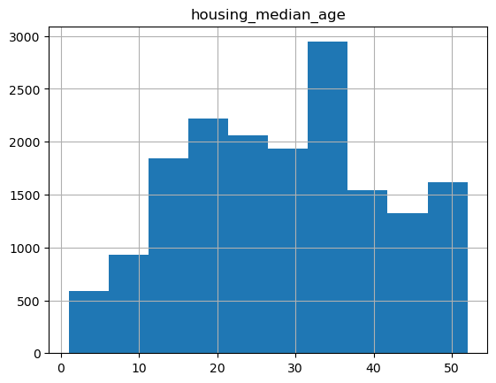
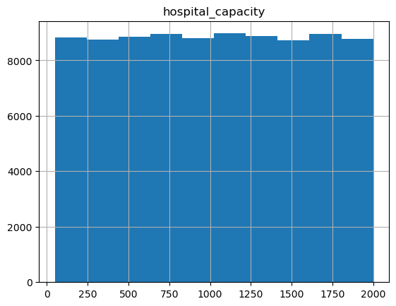
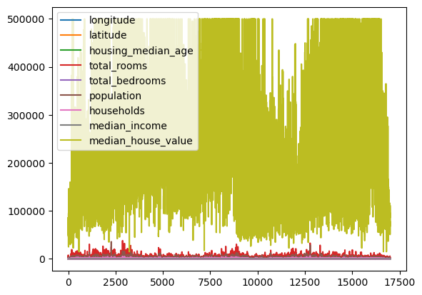
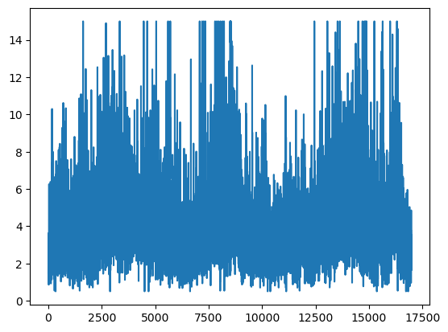
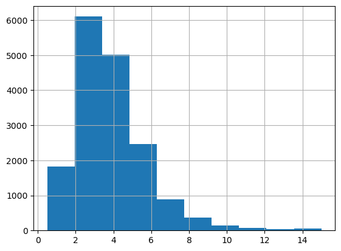
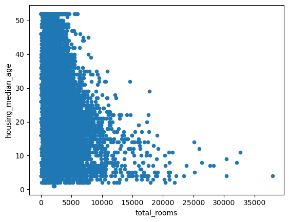

Pandas#
pandas is a column-oriented data analysis API. It’s a great tool for handling and analyzing input data, and many ML frameworks support pandas data structures as inputs. Although a comprehensive introduction to the pandas API would span multiple lectures, the core concepts are fairly straightforward, and we’ll present them below.
At the end of this notebook, you’ll be able to:#
Gain an introduction to the
DataFramedata structure of the pandas libraryAccess and manipulate data within a
DataFrameImport CSV data into a pandas
DataFrame
Table of Contents#
!pip3 install pandas #if you don't have pandas already installed
import pandas as pd
Part I. Series and Dataframes#
The primary data structures in pandas are implemented as two classes:
DataFrame, which you can imagine as a relational data table, with rows and named columns.Series, which is a single column. ADataFramecontains one or moreSeriesand a name for eachSeries.
The data frame is a commonly used abstraction for data manipulation. Similar implementations exist in Spark and R.
One way to create a Series is to construct a Series object. For example:
my_series = pd.Series(['Manhattan', 'Brooklyn', 'Queens'])
my_series
0 Manhattan
1 Brooklyn
2 Queens
dtype: object
DataFrame objects can be created by passing a dict mapping string column names to their respective Series. If the Series don’t match in length, missing values are filled with special empty values. Example:
borough_names = pd.Series(['Manhattan', 'Brooklyn', 'Queens'])
population = pd.Series([1627788, 2736074, 2330124])
live_here = pd.Series([False, True, False])
my_dataframe = pd.DataFrame({ 'Borough name': borough_names,
'Population': population,
'Live here': live_here})
my_dataframe
| Borough name | Population | Live here | |
|---|---|---|---|
| 0 | Manhattan | 1627788 | False |
| 1 | Brooklyn | 2736074 | True |
| 2 | Queens | 2330124 | False |
Task: Make a data frame with the following details:
Column names: Major, Major Code
Column1 - Major - [Mathematics, Computer Science, Psychology, Political Science, English]
Column2 - Major Code - [MATH, CSCI, PSYCH, POLSCI, ENGL]
major = pd.Series(['Mathematics', 'Computer Science', 'Psychology', 'Political Science', 'English'])
major_codes = pd.Series(['MATH', 'CSCI', 'PSYCH', 'POLSCI', 'ENGL'])
my_dataframe = pd.DataFrame({ 'Major': major,
'Major Codes': major_codes})
my_dataframe
| Major | Major Codes | |
|---|---|---|
| 0 | Mathematics | MATH |
| 1 | Computer Science | CSCI |
| 2 | Psychology | PSYCH |
| 3 | Political Science | POLSCI |
| 4 | English | ENGL |
But most of the time, you load an entire file into a DataFrame. The following example loads a file with California housing data. Run the following cell to load the data and create feature definitions:
california_housing_dataframe = pd.read_csv("https://download.mlcc.google.com/mledu-datasets/california_housing_train.csv", sep=",")
california_housing_dataframe
| longitude | latitude | housing_median_age | total_rooms | total_bedrooms | population | households | median_income | median_house_value | |
|---|---|---|---|---|---|---|---|---|---|
| 0 | -114.31 | 34.19 | 15.0 | 5612.0 | 1283.0 | 1015.0 | 472.0 | 1.4936 | 66900.0 |
| 1 | -114.47 | 34.40 | 19.0 | 7650.0 | 1901.0 | 1129.0 | 463.0 | 1.8200 | 80100.0 |
| 2 | -114.56 | 33.69 | 17.0 | 720.0 | 174.0 | 333.0 | 117.0 | 1.6509 | 85700.0 |
| 3 | -114.57 | 33.64 | 14.0 | 1501.0 | 337.0 | 515.0 | 226.0 | 3.1917 | 73400.0 |
| 4 | -114.57 | 33.57 | 20.0 | 1454.0 | 326.0 | 624.0 | 262.0 | 1.9250 | 65500.0 |
| ... | ... | ... | ... | ... | ... | ... | ... | ... | ... |
| 16995 | -124.26 | 40.58 | 52.0 | 2217.0 | 394.0 | 907.0 | 369.0 | 2.3571 | 111400.0 |
| 16996 | -124.27 | 40.69 | 36.0 | 2349.0 | 528.0 | 1194.0 | 465.0 | 2.5179 | 79000.0 |
| 16997 | -124.30 | 41.84 | 17.0 | 2677.0 | 531.0 | 1244.0 | 456.0 | 3.0313 | 103600.0 |
| 16998 | -124.30 | 41.80 | 19.0 | 2672.0 | 552.0 | 1298.0 | 478.0 | 1.9797 | 85800.0 |
| 16999 | -124.35 | 40.54 | 52.0 | 1820.0 | 300.0 | 806.0 | 270.0 | 3.0147 | 94600.0 |
17000 rows × 9 columns
The example above used DataFrame.describe to show interesting statistics about a DataFrame. Another useful function is DataFrame.head, which displays the first few records of a DataFrame:
california_housing_dataframe.head()
| longitude | latitude | housing_median_age | total_rooms | total_bedrooms | population | households | median_income | median_house_value | |
|---|---|---|---|---|---|---|---|---|---|
| 0 | -114.31 | 34.19 | 15.0 | 5612.0 | 1283.0 | 1015.0 | 472.0 | 1.4936 | 66900.0 |
| 1 | -114.47 | 34.40 | 19.0 | 7650.0 | 1901.0 | 1129.0 | 463.0 | 1.8200 | 80100.0 |
| 2 | -114.56 | 33.69 | 17.0 | 720.0 | 174.0 | 333.0 | 117.0 | 1.6509 | 85700.0 |
| 3 | -114.57 | 33.64 | 14.0 | 1501.0 | 337.0 | 515.0 | 226.0 | 3.1917 | 73400.0 |
| 4 | -114.57 | 33.57 | 20.0 | 1454.0 | 326.0 | 624.0 | 262.0 | 1.9250 | 65500.0 |
california_housing_dataframe.describe()
| longitude | latitude | housing_median_age | total_rooms | total_bedrooms | population | households | median_income | median_house_value | |
|---|---|---|---|---|---|---|---|---|---|
| count | 17000.000000 | 17000.000000 | 17000.000000 | 17000.000000 | 17000.000000 | 17000.000000 | 17000.000000 | 17000.000000 | 17000.000000 |
| mean | -119.562108 | 35.625225 | 28.589353 | 2643.664412 | 539.410824 | 1429.573941 | 501.221941 | 3.883578 | 207300.912353 |
| std | 2.005166 | 2.137340 | 12.586937 | 2179.947071 | 421.499452 | 1147.852959 | 384.520841 | 1.908157 | 115983.764387 |
| min | -124.350000 | 32.540000 | 1.000000 | 2.000000 | 1.000000 | 3.000000 | 1.000000 | 0.499900 | 14999.000000 |
| 25% | -121.790000 | 33.930000 | 18.000000 | 1462.000000 | 297.000000 | 790.000000 | 282.000000 | 2.566375 | 119400.000000 |
| 50% | -118.490000 | 34.250000 | 29.000000 | 2127.000000 | 434.000000 | 1167.000000 | 409.000000 | 3.544600 | 180400.000000 |
| 75% | -118.000000 | 37.720000 | 37.000000 | 3151.250000 | 648.250000 | 1721.000000 | 605.250000 | 4.767000 | 265000.000000 |
| max | -114.310000 | 41.950000 | 52.000000 | 37937.000000 | 6445.000000 | 35682.000000 | 6082.000000 | 15.000100 | 500001.000000 |
Another powerful feature of pandas is graphing. For example, DataFrame.hist lets you quickly study the distribution of values in a column:
california_housing_dataframe.hist('housing_median_age')
array([[<Axes: title={'center': 'housing_median_age'}>]], dtype=object)

Accessing Data#
You can access DataFrame data using familiar Python list operations:
my_dataframe = pd.DataFrame({ 'Borough name': borough_names, 'Population': population })
0 Manhattan
1 Brooklyn
2 Queens
Name: Borough name, dtype: object
print(type(my_dataframe['Borough name']))
<class 'pandas.core.series.Series'>
my_dataframe['Borough name']
0 Manhattan
1 Brooklyn
2 Queens
Name: Borough name, dtype: object
my_dataframe['Borough name'][1]
'Brooklyn'
my_dataframe[0:2]
| Borough name | Population | |
|---|---|---|
| 0 | Manhattan | 1627788 |
| 1 | Brooklyn | 2736074 |
Task: Pick your own dataset from here
Make sure the dataset is in the same directory as this notebook
Generate some summary statistics (
.describe())Preview the first couple entries (
.head())Plot a histogram for a relevant column
my_df = pd.read_csv("air_quality_health_dataset.csv")
my_df
| city | date | aqi | pm2_5 | pm10 | no2 | o3 | temperature | humidity | hospital_admissions | population_density | hospital_capacity | |
|---|---|---|---|---|---|---|---|---|---|---|---|---|
| 0 | Los Angeles | 2020-01-01 | 65 | 34.0 | 52.7 | 2.2 | 38.5 | 33.5 | 33 | 5 | Rural | 1337 |
| 1 | Beijing | 2020-01-02 | 137 | 33.7 | 31.5 | 36.7 | 27.5 | -1.6 | 32 | 4 | Urban | 1545 |
| 2 | London | 2020-01-03 | 266 | 43.0 | 59.6 | 30.4 | 57.3 | 36.4 | 25 | 10 | Suburban | 1539 |
| 3 | Mexico City | 2020-01-04 | 293 | 33.7 | 37.9 | 12.3 | 42.7 | -1.0 | 67 | 10 | Urban | 552 |
| 4 | Delhi | 2020-01-05 | 493 | 50.3 | 34.8 | 31.2 | 35.6 | 33.5 | 72 | 9 | Suburban | 1631 |
| ... | ... | ... | ... | ... | ... | ... | ... | ... | ... | ... | ... | ... |
| 88484 | Tokyo | 2262-04-06 | 22 | 23.4 | 53.4 | 24.3 | 58.9 | 9.1 | 55 | 5 | Suburban | 419 |
| 88485 | Delhi | 2262-04-07 | 170 | 48.0 | 32.4 | 25.0 | 15.7 | 5.6 | 40 | 10 | Urban | 695 |
| 88486 | Delhi | 2262-04-08 | 307 | 46.7 | 21.8 | 31.9 | 45.1 | 9.5 | 44 | 12 | Urban | 245 |
| 88487 | Beijing | 2262-04-09 | 65 | 31.9 | 26.0 | 38.1 | 53.0 | 17.8 | 46 | 11 | Suburban | 1291 |
| 88488 | Mexico City | 2262-04-10 | 59 | 41.8 | 50.1 | 31.2 | 52.0 | 25.0 | 65 | 8 | Urban | 983 |
88489 rows × 12 columns
my_df.describe()
| aqi | pm2_5 | pm10 | no2 | o3 | temperature | humidity | hospital_admissions | hospital_capacity | |
|---|---|---|---|---|---|---|---|---|---|
| count | 88489.000000 | 88489.000000 | 88489.000000 | 88489.000000 | 88489.000000 | 88489.000000 | 88489.000000 | 88489.000000 | 88489.000000 |
| mean | 249.370182 | 35.144951 | 50.118654 | 30.006211 | 39.978895 | 17.522962 | 56.950966 | 8.049385 | 1024.463165 |
| std | 144.479132 | 14.767994 | 19.796392 | 9.963139 | 12.007258 | 12.961024 | 21.629675 | 3.715458 | 561.978071 |
| min | 0.000000 | 0.000000 | 0.000000 | 0.000000 | 0.000000 | -5.000000 | 20.000000 | 0.000000 | 50.000000 |
| 25% | 124.000000 | 24.900000 | 36.600000 | 23.300000 | 31.900000 | 6.400000 | 38.000000 | 6.000000 | 539.000000 |
| 50% | 249.000000 | 35.100000 | 50.000000 | 30.000000 | 40.000000 | 17.500000 | 57.000000 | 8.000000 | 1026.000000 |
| 75% | 374.000000 | 45.200000 | 63.500000 | 36.700000 | 48.100000 | 28.700000 | 76.000000 | 10.000000 | 1511.000000 |
| max | 499.000000 | 109.900000 | 143.500000 | 71.400000 | 93.500000 | 40.000000 | 94.000000 | 25.000000 | 1999.000000 |
my_df.head()
| city | date | aqi | pm2_5 | pm10 | no2 | o3 | temperature | humidity | hospital_admissions | population_density | hospital_capacity | |
|---|---|---|---|---|---|---|---|---|---|---|---|---|
| 0 | Los Angeles | 2020-01-01 | 65 | 34.0 | 52.7 | 2.2 | 38.5 | 33.5 | 33 | 5 | Rural | 1337 |
| 1 | Beijing | 2020-01-02 | 137 | 33.7 | 31.5 | 36.7 | 27.5 | -1.6 | 32 | 4 | Urban | 1545 |
| 2 | London | 2020-01-03 | 266 | 43.0 | 59.6 | 30.4 | 57.3 | 36.4 | 25 | 10 | Suburban | 1539 |
| 3 | Mexico City | 2020-01-04 | 293 | 33.7 | 37.9 | 12.3 | 42.7 | -1.0 | 67 | 10 | Urban | 552 |
| 4 | Delhi | 2020-01-05 | 493 | 50.3 | 34.8 | 31.2 | 35.6 | 33.5 | 72 | 9 | Suburban | 1631 |
my_df.hist('hospital_capacity')
array([[<Axes: title={'center': 'hospital_capacity'}>]], dtype=object)

Part II. Manipulating Data#
You may apply Python’s basic arithmetic operations to Series. For example:
population * 1000
0 1627788000
1 2736074000
2 2330124000
dtype: int64
my_dataframe
| Borough name | Population | Live here | |
|---|---|---|---|
| 0 | Manhattan | 1627788 | False |
| 1 | Brooklyn | 2736074 | True |
| 2 | Queens | 2330124 | False |
Modifying DataFrames is also straightforward. For example, the following code adds two Series to an existing DataFrame:
my_dataframe['Area (mi^2)'] = pd.Series([22.82, 69.4, 108.7])
my_dataframe['Population Density (ppl/mi^2)'] = my_dataframe['Population'] / my_dataframe['Area (mi^2)']
my_dataframe
| Borough name | Population | Live here | Area (mi^2) | Population Density (ppl/mi^2) | |
|---|---|---|---|---|---|
| 0 | Manhattan | 1627788 | False | 22.82 | 71331.638913 |
| 1 | Brooklyn | 2736074 | True | 69.40 | 39424.697406 |
| 2 | Queens | 2330124 | False | 108.70 | 21436.283349 |
Earlier on we used the .describe() function to generate summary statistics, however we can ask for statistics on a specific Series
my_dataframe['Area (mi^2)'].median()
np.float64(69.4)
my_dataframe['Population Density (ppl/mi^2)'].mean()
np.float64(44064.20655608003)
my_dataframe['Population'].std()
np.float64(560709.2409309243)
my_dataframe.corr(numeric_only = True) # corr = correlation coefficient
| Population | Live here | Area (mi^2) | Population Density (ppl/mi^2) | |
|---|---|---|---|---|
| Population | 1.000000 | 0.779588 | 0.663653 | -0.742283 |
| Live here | 0.779588 | 1.000000 | 0.048883 | -0.159005 |
| Area (mi^2) | 0.663653 | 0.048883 | 1.000000 | -0.993870 |
| Population Density (ppl/mi^2) | -0.742283 | -0.159005 | -0.993870 | 1.000000 |
Task: Fill in the table
Function |
What it is |
|---|---|
mean |
The average value of your data |
median |
The middlemost value in your data |
std |
How spread out your data is |
min |
minimum |
max |
maximum |
corr |
how correlated (strongly related) two columns are |
Task: In your personal dataset:
Pick a column and find the standard deviation and mean.
Comment on the center of your data, and the spread of your data
Generate the correlation matrix for your data, comment on a intresting correlation in your dataset
my_df.head()
| city | date | aqi | pm2_5 | pm10 | no2 | o3 | temperature | humidity | hospital_admissions | population_density | hospital_capacity | |
|---|---|---|---|---|---|---|---|---|---|---|---|---|
| 0 | Los Angeles | 2020-01-01 | 65 | 34.0 | 52.7 | 2.2 | 38.5 | 33.5 | 33 | 5 | Rural | 1337 |
| 1 | Beijing | 2020-01-02 | 137 | 33.7 | 31.5 | 36.7 | 27.5 | -1.6 | 32 | 4 | Urban | 1545 |
| 2 | London | 2020-01-03 | 266 | 43.0 | 59.6 | 30.4 | 57.3 | 36.4 | 25 | 10 | Suburban | 1539 |
| 3 | Mexico City | 2020-01-04 | 293 | 33.7 | 37.9 | 12.3 | 42.7 | -1.0 | 67 | 10 | Urban | 552 |
| 4 | Delhi | 2020-01-05 | 493 | 50.3 | 34.8 | 31.2 | 35.6 | 33.5 | 72 | 9 | Suburban | 1631 |
my_df['temperature'].median()
np.float64(17.5)
my_df['temperature'].std()
np.float64(12.96102407149432)
my_df.corr(numeric_only = True)
| aqi | pm2_5 | pm10 | no2 | o3 | temperature | humidity | hospital_admissions | hospital_capacity | |
|---|---|---|---|---|---|---|---|---|---|
| aqi | 1.000000 | 0.002894 | 0.001948 | 0.002683 | -0.001849 | -0.004377 | -0.003098 | -0.000393 | 0.004591 |
| pm2_5 | 0.002894 | 1.000000 | -0.000083 | 0.004913 | -0.000791 | -0.006202 | 0.002752 | 0.392309 | 0.002705 |
| pm10 | 0.001948 | -0.000083 | 1.000000 | 0.003693 | 0.001197 | -0.001465 | 0.006189 | 0.000537 | 0.000830 |
| no2 | 0.002683 | 0.004913 | 0.003693 | 1.000000 | -0.000741 | 0.002951 | 0.005071 | 0.001279 | 0.005961 |
| o3 | -0.001849 | -0.000791 | 0.001197 | -0.000741 | 1.000000 | -0.000031 | -0.004403 | -0.003032 | -0.004052 |
| temperature | -0.004377 | -0.006202 | -0.001465 | 0.002951 | -0.000031 | 1.000000 | -0.004595 | -0.003783 | 0.006699 |
| humidity | -0.003098 | 0.002752 | 0.006189 | 0.005071 | -0.004403 | -0.004595 | 1.000000 | 0.000010 | 0.006118 |
| hospital_admissions | -0.000393 | 0.392309 | 0.000537 | 0.001279 | -0.003032 | -0.003783 | 0.000010 | 1.000000 | 0.001533 |
| hospital_capacity | 0.004591 | 0.002705 | 0.000830 | 0.005961 | -0.004052 | 0.006699 | 0.006118 | 0.001533 | 1.000000 |
Part III. Plotting Data#
Plotting is largely done through a package called matplotlib. matplotlib is the package, but really what we want is one particular part from it called pyplot. So we’ll just import that part. To do that, we type from matplotlib import pyplot. Again, it’s a hassle to type pyplot over and over, so we’ll alias it as plt.
import matplotlib.pyplot as plt
pyplot supports several ways to plot data. If you have your data in a Pandas DataFrame (as we do), one thing you can do is to directly plot the DataFrame. This is as simple as adding .plot() to the end of your DataFrame. Let’s try it below.
california_housing_dataframe.plot()
<Axes: >

That works, but it plots all of the columns at once. That’s probably not what we really want. Instead, let’s just plot the “total_rooms” variable.
california_housing_dataframe['median_income'].plot()
<Axes: >

That’s an improvement, but it’s plotting “total_rooms” as a line plot. Probably what we really want is a histogram. To tell matplotlib we want a histogram, just add kind="hist" to the plot command.
california_housing_dataframe['median_income'].hist()
<Axes: >

Let’s try to find two columns that are highly correlated (or uncorrelated) to plot
california_housing_dataframe.corr(numeric_only=True)
| longitude | latitude | housing_median_age | total_rooms | total_bedrooms | population | households | median_income | median_house_value | |
|---|---|---|---|---|---|---|---|---|---|
| longitude | 1.000000 | -0.925208 | -0.114250 | 0.047010 | 0.071802 | 0.101674 | 0.059628 | -0.015485 | -0.044982 |
| latitude | -0.925208 | 1.000000 | 0.016454 | -0.038773 | -0.069373 | -0.111261 | -0.074902 | -0.080303 | -0.144917 |
| housing_median_age | -0.114250 | 0.016454 | 1.000000 | -0.360984 | -0.320434 | -0.295890 | -0.302754 | -0.115932 | 0.106758 |
| total_rooms | 0.047010 | -0.038773 | -0.360984 | 1.000000 | 0.928403 | 0.860170 | 0.919018 | 0.195383 | 0.130991 |
| total_bedrooms | 0.071802 | -0.069373 | -0.320434 | 0.928403 | 1.000000 | 0.881169 | 0.980920 | -0.013495 | 0.045783 |
| population | 0.101674 | -0.111261 | -0.295890 | 0.860170 | 0.881169 | 1.000000 | 0.909247 | -0.000638 | -0.027850 |
| households | 0.059628 | -0.074902 | -0.302754 | 0.919018 | 0.980920 | 0.909247 | 1.000000 | 0.007644 | 0.061031 |
| median_income | -0.015485 | -0.080303 | -0.115932 | 0.195383 | -0.013495 | -0.000638 | 0.007644 | 1.000000 | 0.691871 |
| median_house_value | -0.044982 | -0.144917 | 0.106758 | 0.130991 | 0.045783 | -0.027850 | 0.061031 | 0.691871 | 1.000000 |
Looks like there is a strong relationship between the # of total bedrooms and population (0.881169), let’s visualize it by plotting the # of total bedrooms on the x axis and the population on the y axis on a scatter plot
california_housing_dataframe.plot.scatter(x='total_rooms', y='')
<Axes: xlabel='total_rooms', ylabel='housing_median_age'>

Looks to be strongly correlated! As the number of total bedrooms goes up, so does the population!
Task: In your personal dataset:
a) Plot 3 graphs, one scatter, one histogram, and one line plot.
b) Find two series that are strongly correlated (positive/negative), plot rationally, and comment on why this correlation exists
c) After working with your dataset, comment on some intresting findings/correlations/features of your dataset that you observed.
# "https://download.mlcc.google.com/mledu-datasets/california_housing_train.csv"
# air_quality_health_dataset.csv
my_file = input("Enter a file to check: ")
my_dataframe2 = pd.read_csv(my_file)
my_dataframe2.head()
| longitude | latitude | housing_median_age | total_rooms | total_bedrooms | population | households | median_income | median_house_value | |
|---|---|---|---|---|---|---|---|---|---|
| 0 | -114.31 | 34.19 | 15.0 | 5612.0 | 1283.0 | 1015.0 | 472.0 | 1.4936 | 66900.0 |
| 1 | -114.47 | 34.40 | 19.0 | 7650.0 | 1901.0 | 1129.0 | 463.0 | 1.8200 | 80100.0 |
| 2 | -114.56 | 33.69 | 17.0 | 720.0 | 174.0 | 333.0 | 117.0 | 1.6509 | 85700.0 |
| 3 | -114.57 | 33.64 | 14.0 | 1501.0 | 337.0 | 515.0 | 226.0 | 3.1917 | 73400.0 |
| 4 | -114.57 | 33.57 | 20.0 | 1454.0 | 326.0 | 624.0 | 262.0 | 1.9250 | 65500.0 |